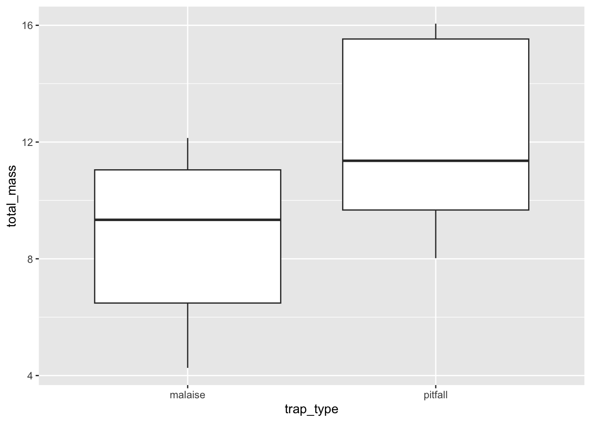

# copy, paste, and run all the below code:
set.seed(123)
mapdat <- runif(10, 10, 100)
y <- mapdat + rnorm(length(mapdat), 0, 15)
q <- quantile(y, probs = seq(0, 1, length.out = 11))
q[q == min(q)] <- min(q) - 0.1
site <- cut(y, q, labels = paste0("site_", 1:10))
dat <- data.frame(site = site, MAP = mapdat)
dat <- dat[rep(1:nrow(dat), each = 3), ]
dat$species <- rep(paste0("species_", 1:3), 10)
dat$total_mass_malaise <- 0.1 * dat$MAP +
as.numeric(as.factor(dat$species)) * 2 +
rnorm(nrow(dat), 0, 2)
dat$total_mass_pitfall <- 6 - 3 * as.numeric(as.factor(dat$species)) +
dat$total_mass_malaise + rnorm(nrow(dat), 0, 2)
rownames(dat) <- NULL13 Visualizing data for hypothesis testing
13.1 Goals
- Visualize the data for your group project in a way that helps address your scientific hypotheses and predictions
13.2 Learning the Tools
Here are the steps for visualizing data with the goal of testing scientific hypotheses:
- State the predictions that derive from your hypotheses
- Identify which variables in the data are implicated by those predictions
- Plan your plot:
- based on the types of variables, what kinds of plot(s) will you need?
- for example:
- continuous explanatory variable and continuous response variable: scatter plot
- discrete/categorical explanatory variable and continuous response variable: box plot
- Manipulate your data to make it ready for plotting
- Make the plot!
To walk through these steps we will use a hypothetical example about arthropod biomass in Hawaiʻi across different environments and over time.
Let’s imagine we have data on arthropod biomass from two different collection methods: malaise traps and pitfalls (no need to worry about what those are, just know we will have two biomass columns in our data, one dedicated to each collection method). For simplicity we will imagine there are only 3 arthropod species, 10 field sites, and 1 environmental measurement (mean annual precipitation = MAP).
We will simulate this dataset. No need to worry about understanding this code, just copy-paste it and run it so you can follow along with the rest of this section:
Now we can have a look at the data:
View(dat)Now let’s talk about some example predictions we could make:
13.2.1 Prediction: total biomass increases with more rainfall
We’ve stated our prediction, now we need to identify the variables:
- The explanatory variable is mean annual precipitation (MAP)
- The response variable is total biomass
Now we plan out plot:
- Both explanatory and response variables are continuous so we will make a scatter plot
Now we have to manipulate our data to get the variables we need. Depending on how the data are formatted, this could be no work, or it could require a fair bit of code. In our case, we need total biomass, which will require a few lines of code.
Let’s start by adding the masses from the malaise and pitfall columns, and storing that new total total mass in a new column called total_mass:
dat$total_mass <- dat$total_mass_malaise + dat$total_mass_pitfallEasy enough. Now, we also need to sum the masses across all three species, because our prediction does not care about species, just total arthropod biomass. For this task we will use tools from the dplyr package:
library(dplyr)
# we will group the data by site and ignore species
dat_no_spp <- group_by(dat, site)
# now use summarize to get the mass across all species
dat_no_spp <- summarize(dat_no_spp,
MAP = mean(MAP),
total_mass = sum(total_mass))
# have a look at what we made:
head(dat_no_spp)# A tibble: 6 × 3
site MAP total_mass
<fct> <dbl> <dbl>
1 site_1 46.8 46.8
2 site_2 14.1 35.7
3 site_3 51.1 62.3
4 site_4 59.6 53.1
5 site_5 35.9 42.8
6 site_6 57.5 64.5Notice a few things about the above code:
- We made a new data.frame called
dat_no_spprather than writing-over the original data. It’s always a good idea to not write-over the original data, you might want to use the original for other caculations later on - We used
group_byandsummarizeto calculate the variable we needed. Here we did write-over the namedat_no_sppbecause we used multiple lines of code to build up that data.frame
Now we can plot our prediction!
library(ggplot2)
ggplot(dat_no_spp, aes(x = MAP, y = total_mass)) +
geom_point()
There you have it! You should take a little time to make the plot look nicer, but we have all the data visualized that we need.
13.2.2 Another example prediction: Malaise traps will catch less biomass of species 1 compared to pitfall traps
We stated the prediction above, now we need to identify the variables:
- Explanatory: type of trap, malaise or pitfall (this is categorical)
- Response: biomass of species 1 (this is continuous)
Given these variables, we now plan our plot: we’ll make a boxplot with type of trap on the x-axis and mass on the y-axis
Now again comes the more labor-intensive part of manipulating the data. Our current data.frame has separate columns for each type of trap. To work with ggplot, we instead need one column that says the name of the trap (malaise or pitfall) and another column with the mass. We can achieve this through a few steps:
First make two data.frames, one for malaise and one for pitfall:
malaise <- dat[, c("site", "MAP", "species", "total_mass_malaise")]
malaise$trap_type <- "malaise"
pitfall <- dat[, c("site", "MAP", "species", "total_mass_pitfall")]
pitfall$trap_type <- "pitfall"What we did above was ask for R to give us a data.frame with specific columns (the ones we named in quotes) and assign that data.frame to a new object name. Then we added a new column called trap_type and stored the appropriate name of the trap in that column.
Now we need to make sure the column names are the same across the two data.frames
colnames(malaise) <- c("site", "MAP", "species", "total_mass", "trap_type")
colnames(pitfall) <- c("site", "MAP", "species", "total_mass", "trap_type")Now we can combine those two data.frames and we’ll have what we need:
dat_by_trap <- rbind(malaise, pitfall)Now we can make the plot!
# notice that we're subsetting the data to just look at species 1
ggplot(subset(dat_by_trap, dat_by_trap$species == "species_1"),
aes(x = trap_type, y = total_mass)) +
geom_boxplot()
Again, you should take some time to beautify your plot, but all the info from the data are now visualized!
13.3 Questions
Now it’s your turn to to walk through the steps of visualizing your data for testing your hypotheses. Complete these answers in the google doc attached to the assignment in google classroom. For each of your two scientific hypotheses:
- State the prediction that derive from your hypothesis
- Identify which variables in the data are implicated by those predictions
- Plan your plot: which type(s) of plot(s) will you need to make, and which data will go on which axis/axes?
- Manipulate your data to make it ready for plotting
- this you do not need to copy into the google doc, but make sure you save your script in posit cloud
- Make the plot!
- take a screenshot of your plot(s) and paste the screenshot(s) into the google doc